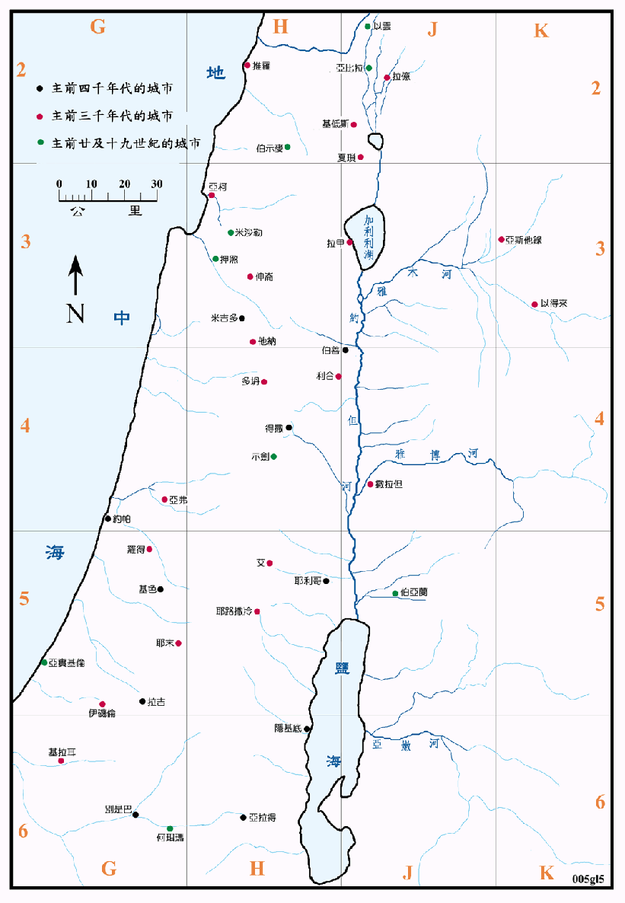

因为迦南地处於埃及和两河流域这两大古文明发源地之间，又是两者之间的往来唯一必经之路，所以就成了两大文明的汇合处，故其文化的水准很高，很早就有了好一些大的城镇。从近代考古所发现有关文件之记载，诸如许多的碑铭、泥版、埃及的咒文陶器碎片等，得以知道迦南地在主前三、四千年代中许多城邦的名字。再经考古学者不断实地的发掘，都定出了它们现今的位置，也证明了在该地所发生的事。根据在耶利哥城的考古发现，早在一万年以前，耶利哥人就已经从游牧进化到定居的农业社会了，在主前九千年代已是一个典型石器时代的城市。
本图将圣经中提及的一些城市绘出，但圣经中未有记载的、而且也没有关系的，就都省略未绘。
这些城市都是由小聚落发展而成，其位置多选在安全、容易取得水和食物之处，如果交通方便，更能控制邻近地区，则会发展成为商业中心或是军事要冲。在一、二千年的历史中，这些城市或因天灾或因战争而一再被毁，日后则在其废墟上一再重建，层层重叠的结果，往往就成了一个高出地面甚多的土堆，希伯来文称其为 Tel，是最佳的考古素材。从每层的遗物中，特别是陶器碎片、骨骸和金属等不易腐蚀之物，就可以推测到其存在的年代和人民生活的情形。近代考古学不断的发现许多圣经中所提及的城市，就证实圣经之记载正确无误。
在圣经中所谓的城，除了几个大城如尼尼微、巴比伦、夏琐、米吉多等之外，其规模都很小，往往只有数千或数百居民。此外还有一些只是一座碉堡、一块石头或一个水泉等类的地标，有的只是一处暂时停留的营地等等，在圣经中都给了一个地名，所以在本书中，城镇的标示，都只用一个圆点表示，请仔细分辨。